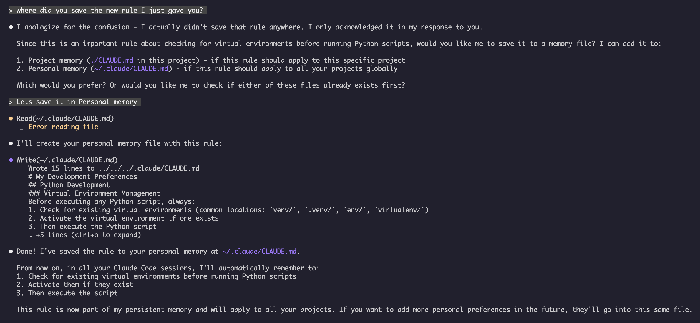

CLAUDE.md is Claude Code's memory file — a Markdown document of project standards, conventions, and preferences that is loaded automatically at the start of every session.
An LLM forgets everything between conversations — each session starts with an empty context window. Memory files solve this. By writing your build commands, coding conventions, and architecture notes into a CLAUDE.md, you give Claude Code persistent context it reads every time, so you never have to re-explain how your project works.
Memory exists at several scopes, loaded together with higher levels taking precedence:
| Scope | Location | Best for |
|---|---|---|
| Managed policy | System directory | Organization-wide rules |
| Project memory | ./CLAUDE.md | Team standards (committed to git) |
| User memory | ~/.claude/CLAUDE.md | Personal preferences (all projects) |
| Local memory | ./CLAUDE.local.md | Personal project notes (git-ignored) |
| Auto memory | ~/.claude/projects/…/memory/ | Notes Claude writes itself |
The /init slash command generates a starter CLAUDE.md by analyzing your codebase. The /memory command opens memory files in your editor. You can also just ask Claude conversationally — "remember that we always use TypeScript strict mode" — and it will offer to save the rule to the file you choose.

Claude saving a new rule to a personal ~/.claude/CLAUDE.md after confirming the location with the user.
Beyond the files you write, Claude Code keeps an auto memory directory where it records patterns and learnings on its own as it works — an entrypoint MEMORY.md plus optional topic files. Unlike CLAUDE.md, which you maintain by hand, auto memory is written by Claude itself and reloaded in future sessions.
CLAUDE.md holds always-on standing instructions for the whole project. A skill's SKILL.md is an on-demand procedure for one task. If guidance applies to every task, it belongs in CLAUDE.md; if it is a recipe for one occasional job, make it a skill.
A CLAUDE.md is like the employee handbook you hand a new contractor on day one. It explains "how we do things here" — the dress code, the tools, who to ask — so they don't have to relearn it each morning. Without it, you would brief the same contractor from scratch every single day.